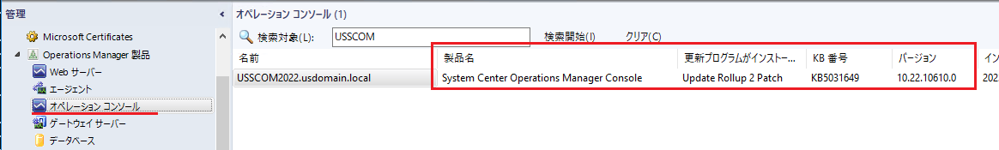

皆様こんにちは、System Center サポートチームの 石原 です。
今回は、SCOM に更新プログラムのロールアップ (UR：Update Rollup) を適用する手順について説明します。
更新プログラムのロールアップ (UR：Update Rollup) について
本記事の公開日時点 (2023/11/20) でサポートが有効な System Center Operations Manager（以後 SCOM）には SCOM 2016, SCOM 2019, SCOM 2022 の 3つのバージョンがあります。
各々のバージョンの初期公開時のモジュールを一般公開版 (GA：General Availability) と呼びます。一般公開版のリリース後、機能追加や不具合修正、セキュリティ対策等の更新プログラムは、更新プログラムのロールアップ (UR：Update Rollup) として提供されます。そのため、SCOM を最新の状態に維持するためには、更新プログラムのロールアップを適用いただく必要があります。
各々のバージョンの 更新プログラムのロールアップのリリース状況は以下サイトをご参照ください。
・SCOM 2022： System Center Operations Manager のリリース ビルドのバージョン | Microsoft Learn
・SCOM 2019： System Center Operations Manager のリリース ビルドのバージョン | Microsoft Learn
・SCOM 2016： System Center Operations Manager のリリース ビルドのバージョン | Microsoft Learn
なお、セキュリティ対策以外の更新プログラム (機能追加や不具合修正) は、原則、メインストリーム サポート期間中 (SCOM 2022, SCOM 2019 ※2023/11/20 時点) の製品に対して提供されます。延長サポート期間中 (SCOM 2016 ※2023/11/20 時点) の製品には、セキュリティ対策の更新プログラムのみが提供されます。
各バージョンのサポート状況につきましては以下のサイトをご参照ください。
・System Center 2022 Operations Manager - Microsoft Lifecycle | Microsoft Learn
・System Center 2019 Operations Manager - Microsoft Lifecycle | Microsoft Learn
・System Center 2016 Operations Manager - Microsoft Lifecycle | Microsoft Learn
また、メインストリーム サポート期間や延長サポート期間の説明につきましては、固定ライフサイクル ポリシーのサイトをご参照ください。
更新プログラムのロールアップ (UR：Update Rollup) の適用手順
今回は、SCOM 2022 に本記事の公開日時点で最新の UR2 を適用する手順をご紹介します。
SCOM の更新プログラムのロールアップは累積型のため、順番に適用する必要はありません。常に最新の更新プログラムを適用できます。一般公開版の SCOM 2022 を導入し、更新プログラムのロールアップを適用したことがない場合でも、利用可能な最新の更新プログラム (今回の場合は UR2) を適用することができます。
UR の適用の際には、System Center Operations Manager のビルド バージョン の表の KB 列のリンクをクリックして、最新の更新プログラム ロールアップのサイトに進みます。
更新プログラム ロールアップのサイト(SCOM 2022 UR2) には、更新プログラムの内容（機能追加、不具合修正、セキュリティ対策）とモジュールのダウンロード方法、インストール手順が記載されています。
● ステップ１：モジュールをダウンロードする
① ～ ②のリンクからモジュールをダウンロードします。
① Operations Manager 更新プログラム パッケージをダウンロードします。
ダウンロードファイルしたファイルを展開します。
| 対象 | ダウンロードファイル | cab ファイル展開後のファイル | 備考 |
|---|---|---|---|
| SCOM 管理サーバー | kb5031649-amd64-server_***.cab | KB5031649-amd64-Server.msp | 簡略化された SCOM 管理サーバーの修正プログラムを 実行する場合は不要です。 |
| SCOM 監査コレクション (ACS) | kb5031649-amd64-acs_***.cab | KB5031649-amd64-ACS.msp | |
| Web コンソール | kb5031649-amd64-webconsole_***.cab | KB5031649-amd64-WebConsole.msp | |
| SCOM ゲートウェイサーバー | kb5031649-amd64-gateway_***.cab | KB5031649-amd64-Gateway.msp | |
| SCOM 管理コンソール | kb5031649-amd64-console_***.cab | KB5031649-amd64-Console.msp | |
| レポート | kb5031649-amd64-reporting_***.cab | KB5031649-amd64-Reporting.msp | |
| SCOM エージェント | kb5031649-amd64-agent_***.cab | KB5031649-amd64-Agent.msp | SCOM コンソールからアップデートも可能です。 |
② 簡略化された SCOM 管理サーバーの修正プログラム (KB5031649-amd64-Server.exe) をダウンロードします。
● ステップ２：コマンドプロンプトを管理者で起動して、以下の順でモジュールを実行します。
※ コマンドプロンプトを管理者として起動 
【実行の順番】
- 簡略化された SCOM 管理サーバーの修正プログラム KB5031649-amd64-Server.exe
- 監査コレクション用モジュール KB5031649-amd64-ACS.msp
- Web コンソール用モジュール KB5031649-amd64-WebConsole.msp
- ゲートウェイサーバー用モジュール KB5031649-amd64-Gateway.msp
- SCOM 管理コンソール用モジュール KB5031649-amd64-Console.msp
- レポート用モジュール KB5031649-amd64-Reporting.msp
- エージェント用モジュール KB5031649-amd64-Agent.msp
実行コマンド結果の画面ショットは以下の通りです。
簡略化された SCOM 管理サーバーの修正プログラム (KB5031649-amd64-Server.exe)
※ 簡略化された SCOM 管理サーバーの修正プログラムが存在する場合は、本プログラムの使用を推奨します。SCOM 管理サーバー用モジュール (KB5031649-amd64-Server.msp) を用いてアップデートする場合、追加でデータベースの更新と管理パックの更新が必要になります。簡略化された SCOM 管理サーバーの修正プログラムは、これらの更新を一括で行うプログラムです。
[Install] を実行します。
監査コレクション用モジュール (KB5031649-amd64-ACS.mspe)
※ 監査コレクションを導入していない SCOM 環境では不要です。Web コンソール用モジュール (KB5031649-amd64-WebConsole.msp)
※ Web コンソールを導入していない SCOM 環境では不要です。ゲートウェイサーバー用モジュール (KB5031649-amd64-Gateway.msp)
※ SCOM ゲートウェイ サーバーで実行します。SCOM ゲートウェイ サーバーを導入していない SCOM 環境では不要です。SCOM 管理コンソール用モジュール (KB5031649-amd64-Console.msp)
※ SCOM 管理サーバーと SCOM コンソールを導入した全てのサーバーで実行します。レポート用モジュール (KB5031649-amd64-Reporting.msp)
※ レポート機能を導入していない SCOM 環境では不要です。エージェント用モジュール (KB5031649-amd64-Agent.msp)
※ エージェントサーバーで実行します。
※ SCOM コンソールからプッシュインストールしていた場合は、SCOM コンソールから UR2 への更新が可能です。
- UNIX および Linux 管理パックの更新
以下のサイトよりUNIX および Linux 管理パックをダウンロードして、SCOM にインポートします。
Download System Center 2022 Management Pack for UNIX and Linux Operating Systems from Official Microsoft Download Center
管理パックのインポート方法については以下のサポートブログもご参照ください。
管理パック (MP) のインポートについて | Japan System Center Support Blog (jpsystemcenter.github.io)
● ステップ３：適用状況を確認します。
SCOM 管理コンソールの管理画面の [Operations Manager 製品] 配下のメニューにて各モジュールのバージョンを確認できます。
SCOM 2022 UR2 のバージョンは [10.22.10610.0] です。
■ SCOM 管理サーバー
■ SCOM 管理コンソール

■ Web コンソール
■ 監査コレクション
■ レポート
UR 適用時の OS 再起動の可能性について
UR の適用では、基本的には SCOM 管理サーバーや管理対象のサーバーの再起動は発生いたしません。ユーザー様からの事例報告でも OS 再起動はほとんど確認しておりません。
ただし、仕組み上は OS 再起動が発生する可能性があります。
UR のモジュールは、Windows インストーラ形式のファイル ( msp/msi ファイル) にて提供されます。msp/msi インストーラを使用したインストール/アンインストールの挙動として、実行時に置き換えが必要なファイル等が他プロセスによりハンドルを保持されていて置き換えできない場合、一度 OS 再起動を試行してファイルの置き換えを実施します。 そのため、この仕様にあたる状況となった場合に OS 再起動が発生する可能性があります。
下記公開情報に記載の通り、基本的にはアプリケーション単位でシャットダウンして、システム全体 (OS) のシャットダウンにつながらないような考慮になっておりますが、可能性という意味では発生し得る点をご認識ください。
参考：再起動マネージャーでの Windows インストーラーの使用
https://learn.microsoft.com/ja-jp/windows/win32/msi/using-windows-installer-with-restart-manager
SCOM の UR 適用手順は以上の通りです。
本手順を参考に SCOM を常に最新の状態にてご利用いただけますと幸いです
※本情報の内容（添付文書、リンク先などを含む）は、作成日時点でのものであり、予告なく変更される場合があります。